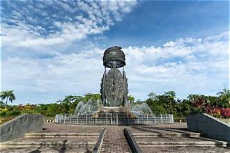

Selamat Datang di Timika
Timika adalah ibu kota Kabupaten Mimika, Provinsi Papua Tengah. Wilayah ini unik karena bentang alamnya mencakup daerah pegunungan sampai daerah pantai. Di sini, tradisi suku-suku asli hidup berdampingan dengan kehidupan kota yang terus berkembang. Melalui website ini, kamu diajak mengenal Timika, mulai dari letak wilayahnya sampai suku dan budaya yang menjadikannya istimewa.

Sekilas Tentang Timika
Hal yang Perlu Diketahui
- Ibu kota Kabupaten Mimika, Provinsi Papua Tengah
- Wilayah Mimika memiliki daerah pegunungan dan daerah pantai
- Di Mimika terdapat tambang emas yang dikelola PT Freeport Indonesia
- Dihuni oleh beberapa suku, di antaranya Amungme dan Kamoro